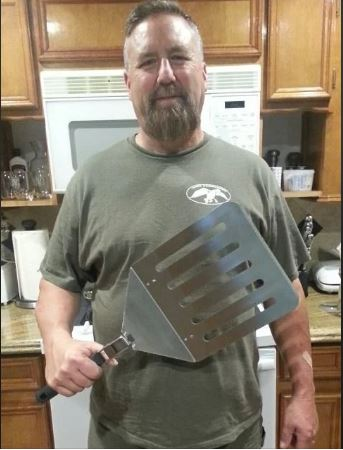

04/09/08: Spatulas

Yesterday, I went to the store and got some much needed spatulas! (What better way to say I love myself than to buy myself a spatula?)
So fresh and so clean

Yesterday, I went to the store and got some much needed spatulas! (What better way to say I love myself than to buy myself a spatula?)

My favorite cartoon character is cookie, and my favorite dessert is cupcakes. So Cookie Cupcakes are the best of both worlds.
Did you know? Cookie character once said,
Sometimes me think what is love, and then me
think love is what cookie is for.
I wonder if the same applies for the cupcakes? (If so, I don't think I can ever love anyone!)